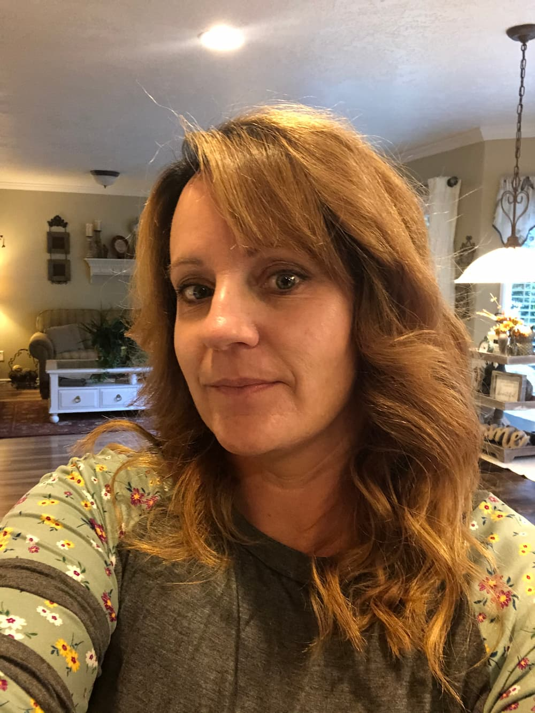

Ami Kathleen Bartholomew | WDD 130
Hello! My name is Ami Kathleen Bartholomew and I am from Stansbury Park, Utah. I am working towards an Applied Associates Degreein Advanced Family History Research as well as a Bachelor's degree in Professional Studies. The bachelor's degree will be in computer and web design. I am earning these certificates and degrees through BYU-Idaho. I have earned my first certificate in Family History Research and I am currently working on my second certificate in Advanced Family History Research. I have an amazing husband and four wonderful children, three girls and one boy. My oldest was married in 2019 and has one daughter. She is currently expecting her second child, a boy! It is so fun to be a grandmother!! My second daughter just turned seventeen this past week. She is a junior in high school and loves reading. My third daughter is fifteen and plays soccer for the high school, where she is a freshman. My son is eight years old and also plays soccer. He loves baseball and is also playing that his spring, with his dad, my husband, as his coach.